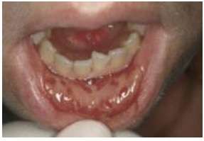
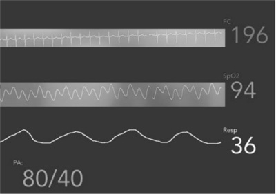
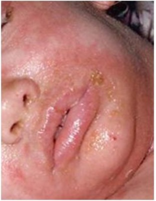
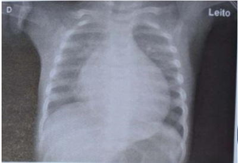

Questão 1 · Síndrome do Choque Tóxico · Pediatria · 4000181497Pré escolar de 3 anos morador de área rural, com queimadura em 1% da superfície corporal por contato com superfície aquecida, no terceiro dia subitamente apresenta febre alta, vômitos e diarreia, acompanhada de dor de garganta, cefaleia e mialgias. Área queimada sem sinais de secreção purulenta. Um exantema macular eritematoso difuso surge dentro de 24 horas. Evolui com alteração do nível de consciência e oligúria. O diagnóstico mais provável é
A tétano.
B dengue.
C leptospirose.
D sepse de foco abdominal.
E síndrome do choque tóxico.
Questão 2 · Pediatria · Diagnóstico · 4000181284Criança com 6 anos de idade em fase escolar, do sexo masculino, é atendida no pronto atendimento pois há 3 dias iniciou quadro de tosse e dor torácica (ventilatório- -dependente), além de cansaço e di culdade para respirar. A mãe relata que apresentou picos de febre de até 40 ºC e 3 episódios de vômitos. No exame físico estava em regular estado geral, descorada 2+/4+, com palidez cutânea com discreto livedo reticular e hipoativa. O exame pulmonar evidenciava diminuição importante do murmúrio vesicular à esquerda, FR = 42 ipm, tiragem de fúrcula e tiragem intercostal, SatO2 = 90% em ar ambiente. Na avaliação cardiovascular havia BRNF sem sopros, FC = 155 bpm e PA = 88 x 54 mmHg. Tempo de enchimento capilar = 4 segundos. Não havia sinais de irritação meníngea e após administração de 40 ml/kg de Ringer lactato o exame físico permanece inalterado. O diagnóstico mais provável para essa criança é:
A Sepse grave secundária à pneumonia sem disfunção cardiovascular.
B Choque séptico compensado secundário à pneumonia aguda.
C Choque séptico descompensado secundário à pneumonia aguda.
D Insuficiência respiratória aguda secundária à síndrome gripal.
E Sepse com choque hipovolêmico secundário à pneumonia aguda.
Questão 3 · Sepse Diagnóstico · Pediatria · Tratamento do Choque Séptico · 4000181162Criança, 4 anos de idade, diagnóstico de meningite por pneumococo. Internada em enfermaria de pediatria, apresenta há algumas horas taquicardia (155 bpm), leve taquipneia, palidez moderada e extremidades malperfundidas, com tempo de enchimento capilar de 6 segundos. Escala de coma de Glasgow = 11. Nos controles de enfermagem, não há registro de diurese nas 12 horas mais recentes. Edemaciada, com fígado palpável a 7 cm do rebordo costal direito. Pressão arterial de 60/25 mmHg. Exames laboratoriais revelam acidose metabólica, aumento do lactato sérico e creatinina. Não há UTI Pediátrica como retaguarda da enfermaria. Com base nessas informações clínicas, considere as afirmativas a seguir. I. Trata-se de sepse com disfunção orgânica e choque séptico, devendo ser administrada reparação com soro siológico, com alíquotas de 20 mL/kg, três vezes. II. Considerando a possibilidade de sepse com provável injúria renal associada, a administração de ringer com lactato, como solução cristaloide, não é recomendada pela maior concentração de potássio. III. Como agente com propriedade vasoativa, recomenda-se a administração de noradrenalina ou adrenalina como primeira opção de tratamento, não havendo, nesse momento, vantagens comprovadas entre essas catecolaminas. IV. Após estabilização da pressão arterial, havendo sinais de baixo débito cardíaco, com aumento da extração de oxigênio e baixa saturação venosa central, recomenda-se associação de fármacos com ação inodilatadora. Assinale a alternativa correta.
A Somente as afirmativas I e II são corretas.
B Somente as afirmativas I e IV são corretas.
C Somente as afirmativas III e IV são corretas.
D Somente as afirmativas I, II e III são corretas.
E Somente as afirmativas II, III e IV são corretas.
Questão 4 · Tratamento do Choque Hipovolêmico · Pediatria · 4000169411Segundo as novas recomendações para parada cardiorrespiratória (RCP) em pediatria, com base no Guia da Association
A solução composta por 50% de glicose e 50% de soro fisiológico.
B glicose 5%.
C adrenalina.
D solução salina.
E derivados de sangue.
Questão 5 · Tratamento · Pediatria · 4000168275Assinale a assertiva correta sobre reposição de fluídos em pacientes pediátricos.
A Uso de Ringer-lactato, por seu alto conteúdo de potássio, está contraindicado para pacientes com sepse.
B Reposição volêmica com grandes volumes de solução salina (solução fisiológica) pode provocar acidose hiperclorêmica.
C Lactente em pausa alimentar deve receber solução fisiológica de manutenção estimada em 100ml/kg/dia com 5 mEq/kg de sódio e 3 mEq/kg de potássio.
D Balanço hídrico cumulativo positivo e edema após reposição fluídica são achados com pouca relevância clínica para pacientes em choque.
Questão 6 · Antibioticoterapia · Pediatria · Tratamento do Choque Séptico · 4000165596Escolar, sexo masculino, 9 anos de idade, portador de osteossarcoma, realizou último ciclo de quimioterapia há 6 dias. É trazido ao Pronto-Socorro com queixa de picos febris de até 39ºC há um dia, vômitos, dor abdominal, dor anal e lesões em cavidade oral conforme imagem abaixo. Admitido na sala de emergência em mau estado geral, descorado 2+/4, FC: 180 bpm, FR: 50 irpm, PA: 70 x 40 mmHg, saturação de O₂: 98% em ar ambiente, tempo de enchimento capilar 6 segundos, pulsos nos, cateter central de longa permanência sem sinais ogísticos. Exames coletados na véspera mostram Hb: 8,2 g/dL, leucócitos 150/mm³ (sem diferencial devido à baixa celularidade), plaquetas 50.000/µL. O paciente recebeu expansão volêmica adequada, antimicrobianos e, após 30 minutos do atendimento inicial, seguia sem melhora significativa dos sinais descritos. Qual é a alternativa que contém respectivamente o melhor esquema antimicrobiano inicial e a próxima medida a ser instituída, considerando que não houve melhora dos parâmetros clínicos após a expansão volêmica?

A Ceftriaxona e fluconazol. Introduzir epinefrina endovenosa contínua.
B Ceftazidima e aciclovir. Solicitar concentrados de hemácias e de plaquetas.
C Piperaciclina-tazobactam. Solicitar concentrados de hemácias e de plaquetas.
D Meropenem e vancomicina. Introduzir epinefrina endovenosa contínua.
Questão 7 · Sepse Diagnóstico · Pediatria · 4000164714Uma paciente feminina, 2 anos de vida, iniciou há um dia quadro de febre até 40°C e tosse. Mãe relata que a paciente cou mais cansada para respirar e menos ativa hoje. Ao exame apresenta enchimento capilar em 4 segundos, pele fria e moteada, pressão arterial: 60×40 mmHg, sonolenta, com cianose perilabial, ausculta pulmonar com diminuição do murmúrio vesicular em base direita, com estertores crepitantes à direita, sinais meníngeos ausentes. Baseado no quadro clínico exposto, é correto afirmar:
A Deve-se iniciar imediatamente a expansão com soro glicosado 5% - 20 ml/kg.
B Deve-se iniciar sequência rápida de intubação como medida inicial.
C Está indicado o uso da hidrocortisona antes da expansão com solução cristaloide.
D Deve-se usar solução coloide 10 ml/kg em 30 minutos como medida inicial.
E Deve-se iniciar antibioticoterapia preferencialmente na primeira hora
Questão 8 · Quadro Clínico do Choque Séptico · Tratamento · 4000171552Lactente, 18 meses, sexo feminino, deu entrada no serviço de emergência com quadro de febre há 48 horas, constante, de 38-38,5ºC, não cede a antitérmicos. Mãe percebeu dor abdominal difusa, prostação, baixa ingesta, nega tosse, nega alterações de pele. Ao exame físico encontra-se desidratada, prostada, saliva espessa, frequência cardíaca de 136 bpm (batimentos por minuto), frequência respiratória de 22 irm (incursões respiratórias por minuto), PA (pressão arterial de 80/46 mmHG, pulsos nos. Coletado exames. Apresenta hemoglobina de 8,5g/dL, hematócrito de 30%. PCR: 90 (proteína C reativa). Exame simples de urina coletado por sonda vesical de alívio com leucocitose, hematúria, nitrito positivo. Qual o diagnóstico e a conduta?
A Infecção do trato urinário, antibiótico oral e observação domiciliar.
B Sepse, coleta de culturas e antibiótico venoso, observação por 24 horas.
C Infecção do trato urinário, sepse, hidratação venosa e antibiótico, internação hospitalar.
D Infecção do trato urinário, sepse, expansão volumétrica, coleta de culturas e iniciar antibiótico de amplo expectro, internação hospitalar.
Questão 9 · Choque em Pediatria · 4000170904Considera-se que uma criança de 8 anos está hipotensa quando sua PAS está abaixo de:
A 70.
B 82.
C 86.
D 90.
Questão 10 · Pediatria · Tratamento do Choque Séptico · 4000145773Criança de 6 anos, com fígado transplantado há 3 meses, tem apresentado febre, cansaço e recusa alimentar há 3 dias. Na admissão hospitalar, está com taquicardia e má perfusão periférica. Apresenta hemoglobina de 7g/dl, leucócitos de 830/mm³ e plaquetas de 160.000/mm³. A conduta inicial mais adequada neste momento é administrar:
A Cefepime.
B Azitromicina.
C Fluconazol.
D Aciclovir.
E Prednisolona.
Questão 11 · Tratamento · Pediatria · 4000145571Paciente de cinco anos de idade, dá entrada no Pronto Atendimento, em estado de choque séptico, caracterizado por rubor das extremidades, enchimento capilar de 2 segundos, pulsos cheios, pressão arterial diminuída e baixo débito urinário. Foi iniciado prontamente reposição volêmica com solução fisiológica sem resposta. O próximo passo é INICIAR:
A Adrenalina
B Nilrinona
C Noradrenalina
D Vasopressina
Questão 12 · Classif icação · Pediatria · 4000144293Criança de 5 anos de idade com peso estimado de 20 kg, foi atropelada por uma moto. Segundo equipe do resgate, criança foi encontrada no cenário, inconsciente, com escala de coma de Glasgow de 7, com múltiplas escoriações no corpo e hematoma subgaleal temporal à esquerda, sendo então prontamente intubada e transferida para sala de urgência de hospital terciário. Ao exame: criança intubada, sedada, pupilas mióticas e bradifotorreagentes, ventilada com bolsa valva- máscara com uxo de 1 O litros de oxigênio/min. Subitamente, durante a monitorização, nota-se frequência cardíaca 160 bpm, pressão arterial 70 x 40 mmHg, saturação de 02 85%, pulsos periféricos nos e centrais palpáveis, tempo de enchimento capilar de 4-5 segundos. Na ausculta pulmonar, o murmúrio vesicular está reduzido em hemitórax direito e hipertimpânico à percussão. Escolha qual das alternativas abaixo define melhor a condição de deterioração constatada na sala de urgência:
A Choque distributivo.
B Choque obstrutivo.
C Choque hipovolêmico hemorrágico.
D Choque neurogênico.
Questão 13 · Sepse Diagnóstico · Pediatria · 4000142688Criança, 21 meses, é levada à emergência por "estar gripado". Segundo a mãe, ele está com febre e sem se alimentar bem há cerca de 20 horas, além de apresentar dor abdominal e um episodio de vômito (líquido verde) pela a manhã. Sinais vitais: peso = 15kg; temperatura = 39,2°C; frequência cardíaca (FC) = 60bpm; frequência respiratória (FR) = 35irpm; saturação de oxigênio (SpO2) = 98%, em ar ambiente; pressão arterial sistólica = 60mmHg e diastólica indetectável; enchimento capilar superior a 4 segundos. Letárgica e incapaz de acompanhar objetos com o olhar, choro sem lágrimas. A hipótese diagnóstica mais provável e a conduta mais adequada para este menino, respectivamente, é:
A choque séptico / puncionar acesso venoso, iniciar etapa rápida de solução salina a 300mL em 5-10 minutos,
B estenose hipertrófica de piloro/ puncionar acesso venoso, administrar antitérmico e realizar intubação orotraqueal
C choque séptico/ puncionar acesso venoso, administrar antitérmico e iniciar massagem cardíaca
D estenose hipertrófica de piloro / puncionar acesso venoso, iniciar etapa rápida de solução salina a 300mL em 20 minutose realizar intubação orotraqueal
Questão 14 · Pediatria · Tratamento do Choque Séptico · 4000141837Criança de 3 anos, sexo feminino, dá entrada no serviço de urgência, com história de febre e vômitos há 24 horas. Exame físico: Estado geral regular, hipocorada (2+/4+), febril, eupneica, mucosa oral seca, olhos encovados, consciente, porém sonolenta. Auscultas cardíaca e respiratória normais. FC: 120 bpm. FR: 36 ipm. Pulsos nos, tempo de enchimento capilar de 4 segundos. Abdome: plano, ácido, indolor, sem visceromegalias. SN: rigidez de nuca presente, pupilas isocóricas e fotorreagentes, fundo de olho normal, escala de coma de Glasgow de 14. Pele: petéquias em membros inferiores. Qual a conduta mais adequada dentre as alternativas abaixo citadas?
A Expansão de 20 mL/Kg com SF 0,9% por via endovenosa, coletar líquor e hemocultura e iniciar antibioticoterapia empírica.
B Expansão de 20 mL/Kg com SF 0,9% por via endovenosa, coletar líquor e hemocultura e aguardar resultado do líquor para definir início de antibioticoterapia.
C Expansão de 20 mL/Kg com SF 0,9% por via endovenosa, coletar hemocultura, iniciar antibioticoterapia empírica, realizar tomografia computadorizada de crânio de urgência para definir coleta de líquor.
D Hidratação venosa com soro de manutenção, coletar líquor e hemocultura e iniciar antibioticoterapia empírica.
E Hidratação venosa com soro de manutenção, coletar líquor e hemocultura e aguardar resultado do líquor para definir início de antibioticoterapia.
Questão 15 · Pediatria · Choque Hipovolêmico · 4000141570Adolescente, 15 anos, sexo masculino, vítima de acidente automobilístico com amputação da perna direita no local do acidente, chega ao pronto-socorro trazido pelo SAMU. Monitorizado na sala de urgência, apresenta o seguinte exame físico: REG, descorada 3+/4+, hidratada, acianótica, anictérico. Glasgow 13, pupilas isocóricas e fotorreagentes, sem dé cits motores. Temperatura: 36 0C. Oroscopia e otoscopia normais. AP: murmúrio vesicular presentes em ambos os hemitórax, sem ruídos adventícios, SatO2: 98%. ACV: ruídos cardíacas em 2T sem sopros, PA= 70x40 mmHg, FC= 105 bpm. Abdome flácido, sem massas ou visceromegalias, RHA +. Pulsos +, finos, perfusão de 4 segundos. Com essas características, qual o tipo de choque esse paciente apresenta?
A Choque cardiogênico.
B Choque séptico.
C Choque hipovolêmico.
D Choque elétrico.
E Não apresenta sinais de choque.
Questão 16 · Pediatria · Tratamento do Choque Séptico · 4000140474Giulia, oito meses de idade, foi levada pela sua mãe a uma unidade de pronto atendimento com história de infecção do trato urinário e febre há 5 dias. A mãe refere que a bebê estava fazendo uso de antibioticoterapia para tratamento dessa infecção, mas notou piora importante do quadro clínico nas últimas horas. O médico que a atendeu constatou que a criança se encontrava em choque séptico, com extremidades frias, pulso fino e PA: 80 x 30 mmHg. A conduta inicial mais indicada para essa paciente, dentre as abaixo, é:
A soro de manutenção e infusão contínua de dobutamina.
B reposição volêmica com ringer ou ringer lactato, em bôlus de 10 mL/kg em 5 a 10 minutos.
C reposição volêmica com soro fisiológico de 20 mL/kg em uma hora.
D reposição volêmica com ringer ou ringer lactato, em bôlus de 20 mL/kg em 5 a 10 minutos.
E soro de manutenção e infusão contínua de noradrenalina.
Questão 17 · Tratamento · Pediatria · Choque em Pediatria · 4000138654A melhor opção de reposição volêmica na emergência pediátrica é o.
A soro glicosado 5% 20 mL/kg.
B soro glicosado 50% 5 mL/kg.
C soro fisiológico 20 mL/kg.
D soro fisiológico 30 mL/kg.
E ringer lactato 1 mL/kg.
Questão 18 · Tratamento · Pediatria · 4000137484Criança, 21 meses, é levada à emergência por "estar gripado". Segundo a mãe, ele está com febre e sem se alimentar bem há cerca de 20 horas, além de apresentar dor abdominal e um episodio de vômito (líquido verde) pela a manhã. Sinais vitais: peso = 15kg; temperatura = 39,2°C; frequência cardíaca (FC) = 60bpm; frequência respiratória (FR) = 35irpm; saturação de oxigênio (SpO2) = 98%, em ar ambiente; pressão arterial sistólica = 60mmHg e diastólica indetectável; enchimento capilar superior a 4 segundos. Letárgica e incapaz de acompanhar objetos com o olhar, choro sem lágrimas. A hipótese diagnóstica mais provável e a conduta mais adequada para este menino, respectivamente, é:
A choque séptico / puncionar acesso venoso, iniciar etapa rápida de solução salina a 300mL em 5-10 minutos.
B estenose hipertrófica de piloro/ puncionar acesso venoso, administrar antitérmico e realizar intubação orotraqueal.
C choque séptico/ puncionar acesso venoso, administrar antitérmico e iniciar massagem cardíaca.
D estenose hipertrófica de piloro / puncionar acesso venoso, iniciar etapa rápida de solução salina a 300mL em 20 minutose realizar intubação orotraqueal.
Questão 19 · Choque Hipovolêmico · 4000130774A causa mais comum de choque em crianças são diarreia e vômitos. De acordo com a siopatologia, essas crianças apresentam choque
A obstrutivo.
B cardiogênico.
C distributivo.
D hipovolêmico.
Questão 20 · Quadro Clínico do Choque Séptico · 4000130768Criança em choque séptico, apresentando vasodilatação, aumento da permeabilidade capilar e redistribuição do uxo sanguíneo, com consequente hipovolemia relativa, tem choque
A obstrutivo.
B cardiogênico.
C distributivo.
D hipovolêmico.
Questão 21 · Tratamento do Choque Séptico · 4000117650Você atende um paciente de 14 meses com quadro de cansaço, irritabilidade e recusa alimentar há 3 dias, com piora há 1 dia. É previamente saudável, mas há 15 dias teve, segundo a mãe, uma “virose” que causou diarreia e “manchas” pelo corpo. Ao exame físico, está em regular estado geral, febril (39°C), pálida, taquidispneica (frequência respiratória de 60 incursões por minuto), com saturação de pulso de oxigênio de 96% com oxigênio a 100%. Sua perfusão periférica é de 7 segundos, pulsos periféricos nos e pressão arterial de 55 x 32 mmHg. Ausculta cardíaca normal, estertores nos em ambas bases pulmonares e fígado palpável a 4 cm do rebordo costal direito. Restante do exame sem alterações. A conduta imediata é:
A Monitoração em sala de emergência, obtenção de acesso venoso periférico e infusão de 5 a 10 mL/kg de solução cristaloide em 20 a 30 minutos.
B Monitoração em sala de emergência, obtenção de acesso venoso ou intraósseo e infusão de 20 mL/kg de solução cristaloide em 5 a 10 minutos.
C Solicitar avaliação cirúrgica para obtenção de acesso venoso profundo na sala de emergência, e iniciar noradrenalina contínua assim que obtido o acesso.
D Administrar uma dose de dipirona parenteral, manter o paciente em observação e reavaliar após melhora da febre.
Questão 22 · Tratamento do Choque Séptico · 4000111760Menina, 7 anos de idade, previamente hígida, apresenta quadro de febre há 1 dia de até 39,5°C, mal-estar e hipoatividade. Foi admitida no Pronto-Socorro letárgica, sendo levada à sala de emergência. Na avaliação primaria, estava febril, sonolenta, porém responsiva ao chamado, hidratada. Apresentava extremidades frias, pulsos nos e tempo de enchimento capilar de 6 segundos. Ausculta pulmonar e cardíaca sem alterações, abdome indolor, sem visceromegalias. Abaixo os dados de monitorização do paciente. Qual é a conduta imediata?


A Sedação seguida de cardioversão elétrica.
B Ceftriaxone e expansão volêmica.
C Manobra vagal seguida de adenosina.
D Antitérmico e reavaliação após 1 hora.
Questão 23 · Quadro Clínico do Choque Séptico · 4000108254Criança de 3 meses, com história de febre alta, tosse e desconforto respiratório há 2 dias, dá entrada na sala de emergência apresentando-se torporosa, taquidispneica (frequência respiratória de 70 ipm, com tiragens), taquicárdica (frequência cardíaca de 150 bpm), com má perfusão periférica e pulsos nos. Ausculta pulmonar com diminuição de murmúrios em base direita. De acordo com a suspeita diagnóstica, espera-se encontrar
A acidose e lactato sérico aumentado.
B acidose e lactato sérico diminuído.
C alcalose e lactato sérico aumentado.
D alcalose e lactato sérico diminuído.
E distúrbio misto e lactato sérico aumentado.
Questão 24 · Tratamento · Quadro Clínico e Diagnóstico · 4000100386Menina, 3 anos de idade, sem comorbidades, é levada a Pronto-Socorro por quadro de febre há 3 dias, de até 39,5°C. Os episódios são frequentes, sendo necessário intercalar dipirona e ibuprofeno para controle térmico. Há 2 dias evoluiu com eritema pruriginoso em tronco e há 1 dia com descamação. Ao exame clínico, criança em regular estado geral, T 37,5°C, PA 74 x 58 mmHg, FC 177 bpm, FR 38 ipm, SatO2 94% em ar ambiente. Sem outras alterações ao exame clínico, exceto pelas lesões difusas na pele com eritrodermia intensa e descamação, conforme figura abaixo. Qual é a conduta imediata indicada neste momento?

A Difenidramina, ranitidina e hidrocortisona endovenosos.
B Adrenalina endovenosa contínua e antibioticoterapia com eritromicina.
C Expansão volêmica e antibioticoterapia com oxacilina e clindamicina.
D Pulsoterapia com metilprednisolona e suspensão de qualquer outra medicação.
E Sulfadiazina de prata tópica e enfaixamento das lesões.
Questão 25 · Tratamento do Choque Hipovolêmico · 4000096417Lactente, 11 meses, é trazido pela mãe à emergência com quadro de vômitos e diarreia há dois dias. Hoje mais irritado, urinando menos, segundo a mãe e apresentando febre, fez antitérmico antes de sair de casa. Exame físico: irritado, choroso, tax: 36,8ºC, desidratado, corado, acianótico, anictérico. Perfusão periférica: 3s, pulsos periféricos diminuídos, FC: 175 bpm. PA: 90 X40 mmHg. FR: 40 irpm, leve tiragem subcostal. Fontanela anterior deprimida, sem sinais de irritação meníngea ou de focalização neurológica. Restante do exame físico sem alterações. O diagnóstico e tratamento imediato indicados neste caso são:
A choque compensado; hidratação venosa de manutenção
B choque descompensado; hidratação venosa de manutenção
C choque compensado; etapa de expansão com soro fisiológico rápido, 20 ml/kg
D choque descompensado; etapa de expansão com soro fisiológico rápido, 20 ml/kg
E choque descompensado; etapa de expansão com plasma freso
Questão 26 · Sepse Diagnóstico · Tratamento Geral · Aspectos Clínicos Quadro clínico · 4000062159Você atende uma criança de 3 anos no pronto atendimento de um hospital terciário com a seguinte história: febre de início há 3 dias com piora nas últimas 24 horas, prostração e tosse produtiva. Ao exame a criança encontra-se taquipneica (FR: 60irpm), taquicárdica (FC: 180bpm), febril (tax: 39,8oC), prostrada e um pouco confusa, pulsos carotídeos nos, perfusão capilar periférica lenti cada, murmúrio vesicular rude com crepitações difusas, ritmo cardíaco regular em 2 tempos, ausência de sopros, abdômen levemente distendido, fígado a cerca de 3cm do rebordo costal direito, saturação 91% em ar ambiente. É CORRETO afirmar que a prioridade no atendimento a essa criança é de:
A Oferecer oxigenoterapia por máscara, puncionar acesso venoso calibroso, realizar expansão volêmica 20ml/kg de solução fisiológica 0,9% e iniciar antibioticoterapia.
B Colher exames laboratoriais e somente após, iniciar antibioticoterapia em acesso venoso periférico.
C Puncionar acesso venoso e intubar a criança o mais rápido possível, iniciando ventilação mecânica.
D Iniciar hidratação venosa vigorosa após puncionar acesso venoso central, iniciando antibioticoterapia após a coleta de exames laboratoriais.
Questão 27 · Tratamento do Choque Obstrutivo · 4000047905Menino de 5 anos de idade, vitima de acidente automobilístico, chega ao Pronto Socorro, com relato de que estava sentado no banco de trás, sem cinto de segurança, sendo projetado para o banco da frente. Ao exame: sonolento, pálido, hidratado limítrofe, taquidispneico. Pólo cefálico: sem alterações; OF: ndn; Ap: MV abolido a direita e presente, sem ruídos adventícios a esquerda; Hipertimpanismo a percussão do lado direito Tórax assimétrico; AC: BCNF, RCR 2t s/s. FC; 160 bpm; Pulsos periféricos nos e enchimento capilar de 4 segundos; PA: 70 x 40 mmhg; ABd: depressível, rha +, indolor; Descompressão brusca negativo; SN: ECG 10; Pupilas isocoricas e fotoreagentes. Sem sinais de fraturas A opção de tratamento mais adequada para o caso acima é:
A Antibioticoterapia e bolus de cristalóide
B Cristalóides e hemocomponentes
C Toracocentese de alivio
D Epinefrina + Hidrocortisona
E Metilprednisolona em altas doses
Questão 28 · Choque Obstrutivo · 4000047881Menino de 5 anos de idade, vitima de acidente automobilístico, chega ao Pronto Socorro, com relato de que estava sentado no banco de trás, sem cinto de segurança, sendo projetado para o banco da frente. Ao exame: sonolento, pálido, hidratado limítrofe, taquidispneico. Pólo cefálico: sem alterações; OF: ndn; Ap: MV abolido a direita e presente, sem ruídos adventícios a esquerda; Hipertimpanismo a percussão do lado direito Tórax assimétrico; AC: BCNF, RCR 2t s/s. FC; 160 bpm; Pulsos periféricos nos e enchimento capilar de 4 segundos; PA: 70 x 40 mmhg; ABd: depressível, rha +, indolor; Descompressão brusca negativo; SN: ECG 10; Pupilas isocoricas e fotoreagentes. Sem sinais de fraturas O provável diagnóstico do paciente acima, é:
A choque séptico
B choque hemorrágico
C choque obstrutivo
D choque anafilático
E choque neurogênico
Questão 29 · Tratamento do Choque Séptico · 4000033704Criança com três anos de idade, há cinco dias com diagnóstico de varicela é levada à UPA. Nos últimos dois dias, há relato de prostração, febre alta e aparecimento de secreção purulenta em várias das lesões cutâneas. Ao exame clínico, está confusa, febril (39,5ºC), taquicárdica (180bpm), taquipneica (30irpm), com pulsos periféricos nos e rápidos, perfusão capilar entre 4 e 5 segundos, PA 90/60mmHg e com lesões crostosas e purulentas em tórax, abdome e membros. Após, administração de 40ml/Kg de cloreto de sódio a 0,9%, livre (em bolus), manteve o quadro inalterado. Exames laboratoriais: Hemácias: 3,69 milhões/mm³ (VR: 4,0-5,2 milhões/mm³); Hemoglobina: 11,1g/dL (VR: 11,5 - 13,5g/dL); Hematócrito: 40% (VR: 34-40%); Global de leucócitos: 16.420/mm³ (VR: 5.00014.500/mm³); Diferencial: 70% segmentados; 25% linfócitos; 2% monócitos; e 3% bastonetes. Plaquetas: 200.000/mm³ (VR: 150.000 a 450.000/mm³); Proteína C reativa: 105mg/dL (VR <6 mg/dL); Dosagem de sódio sérico: 138mmol/L (VR: 135-145mmol/L); Gasometria: pH 7,35; PaO₂ 81mmHg; PaCO₂ 33mmHg; HCO₃ 19mEq/L; BE -6 (VR: pH 7,357,45; PaO₂ >80 mmHG; PaCO₂ 35-45mmHg; HCO₃ 21-27mEq/L; BE -6) Assinale a conduta MAIS INDICADA neste momento.
A Fazer bolus de bicarbonato de sódio e administrar cloreto de sódio a 0,9%
B Fazer bolus de bicarbonato de sódio e administrar solução colóide
C Iniciar antibioticoterapia e administrar cloreto de sódio a 0,9%
D Iniciar antibioticoterapia e administrar solução colóide
Questão 30 · Quadro Clínico do Choque Séptico · 4000026915Menina, 15 meses, chega à Emergência com quadro de febre, vômitos e alternando irritabilidade e letargia há um dia. Mãe refere que a urina está diminuida. Exame físico: Regular estado geral, T= 38,6°, PA= 90 x 60 mmHg, FC= 170 bpm, FR=50 irpm, palidez cutânea, mucosas secas, anictérica, acianótica, pulsos periféricos finos, perfusão periférica= 4 seg. Pele: lesões arroxeadas nos membros inferiores e abdome, não desaparecem à dígito pressão. Nas várias tentativas de punção venosa periférica, apresenta sangramento profundo. A HIPÓTESE DIAGNÓSTICA É:
A Choque séptico.
B Sindrome hemolitico urêmica.
C Choque hipovolêmico.
D Púrpura de Henoch-Schonlein.
E Crise asmática.
Questão 31 · Choque Neurogênico · 4000019401Assinale a alternativa que NÃO apresenta um achado compatível com choque neurogênico:
A Hipotensão.
B Bradipneia.
C Vasodilatação periférica.
D Taquicardia.
Questão 32 · Tratamento Geral do Choque · 4000012299Menino, 3 anos de idade, chega ao pronto atendimento com quadro de febre há três dias, inapetência e dispneia. Exame físico: MEG, descorado e desidratado +/4+, FR = 40 ipm, T = 37,8 °C, FC = 140 bpm, SatO₂ = 84 % em ar ambiente, PA= 70x50 mmHg. MV presente e diminuído em base direita, com estertor crepitante no local. BRNF sem sopros. Fígado a 1 cm do RCD, baço não percutível. Extremidades sem edema, com gradiente térmico e enchimento capilar igual a 4 segundos. Levado à sala de emergência, qual seria a sequência de prioridades no atendimento deste paciente?
A Cateter nasal 1l/min, monitorização cardíaca, acesso vascular, antitérmico intravenoso e glicemia capilar
B Cateter nasal 1l/min, acesso vascular, expansão volêmica com 20 ml/Kg de cloreto de sódio 0,9% e radiografia de tórax
C Máscara facial não reinalante, monitorização cardíaca, acesso vascular, glicemia capilar e expansão volêmica com 20 ml/Kg de cloreto de sódio 0,9%
D Acesso vascular, expansão volêmica com 10 ml/Kg de cloreto de sódio 0,9%, máscara facial não reinalante e radiografia de tórax
E Acesso vascular, antitérmico intravenoso, expansão volêmica com 10 ml/Kg de cloreto de sódio 0,9%, máscara facial não reinalante e radiografia de tórax
Questão 33 · Cardiopediatria e Cardiopatias congênitas · Pediatria · Choque em Pediatria · 4000130357Menino, 5 meses, com história de tosse, di culdade respiratória e cansaço às mamadas há 3 dias. Nas últimas 24 horas, houve intensi cação do cansaço, com recusa alimentar. Refere febre baixa no início do quadro. Exame físico: descorado +/4+, palidez cutânea, afebril, irritado, FR= 178bpm, FR= 65irpm, saturação transcutânea de oxigênio= 92% (ar ambiente), pulsos de baixa amplitude, tempo de enchimento capilar de 3 segundos; Coração: bulhas normofonéticas, com 3ª bulha presente, sem sopros; Pulmões: murmúrio vesicular simétrico e estertores subcrepitantes em bases; Abdome: ácido, fígado palpável à 4 cm do rebordo costal direito. OS DIAGNÓSTICOS SINDRÔMICO, ANATÔMICO E ETIOLÓGICO SÃO:
A Síndrome do desconforto respiratório agudo, bronquiolite, vírus sincicial respiratório.
B Choque cardiogênico, miocardite, enterovírus.
C Choque séptico, abscesso hepático, Staphylococcus aureus.
D Choque séptico, pneumonia, Streptococcus pneumoniae.
Questão 34 · Quadro Clínico do Choque Séptico · Sepse Diagnóstico · Tratamento Geral do Choque · 4000125718Você está trabalhando como médico da família e atende um adolescente de 14 anos com quadro de vômitos e febre desde hoje de manhã. Ao meio-dia, os pais referem que está prostrado e, no nal da tarde, iniciou com manchas arroxeadas no corpo todo. Ao exame: MEG, pálido, FC 148, FR 18, PA 86x55. Respiratório com padrão irregular, gasping, cardiovascular sem alterações. Pele: presença de sufusões hemorrágicas difusas. Neurológico: sonolento e irresponsivo, sem sinais meníngeos. Sua conduta inicial imediata é
A ventilação com ambu e máscara, soro fisiológico 5-10 ml/kg, colher exames.
B intubação orotraqueal, soro fisiológico 5-30 ml/kg, ceftriaxone dose de ataque.
C intubação orotraqueal, dopamina, colher exames, ceftriaxone dose de ataque.
D intubação orotraqueal, ringer lactato 20ml/kg, colher exames, ampicilina e cloranfenicol.
E ventilação com ambu e máscara, ringer lactato 20ml/kg, ceftriaxone, colher exames.
Questão 35 · Síndrome do Choque Tóxico Estreptocócico · 4000123581Uma menina de quatro anos de idade foi levada ao hospital com queixa de edema em face e região cervical direita iniciado há dois dias, acompanhado de vários picos febris (39-40 graus Celsius). Há um dia, passou em atendimento na Unidade Básica de Saúde, onde foi diagnosticada clinicamente como provável caxumba, recebendo tratamento apenas sintomático. Hoje, evoluiu com piora do edema, com rápida progressão de tamanho e áreas de equimose. A mãe relatou também quadro de varicela iniciado há dez dias, apresentando apenas lesões cicatriciais no momento, e que a paciente não urinava há doze horas. À entrada no setor de internação, estava acordada, consciente, afebril, hidratada, com FC de 150 bpm e PA de 100 x 60 mmHg, sem outras allterações ao exame físico, além da evidenciada em região cervical com edema, áreas equimóticas e descamativas. Foi iniciada antibioticoterapia com cefalosporina de 3.ª geração e expansão volêmica. Foram coletados exames. Evoluiu rapidamente com alteração do nível da consciência e muita sonolência, sendo submetida à intubação orotraqueal. Após expansão total com 60 mL/kg de cristaloide, ainda mantinha perfusão periférica de 5 s, FC de 160 bpm e PA de 90 x 55 mmHg, sem diurese. Com base nessa situação hipotética, assinale a alternativa correta quanto ao diagnóstico mais provável e à conduta a ser adotada.
A diagnóstico: choque séptico por meningococcemia conduta: coletador o líquor, manter antibiótico e iniciar droga vasoativa
B diagnóstico: varicela infectada conduta: associar aciclovir ao antibiótico
C diagnóstico: choque tóxico estreptocócico conduta: associar clindamicina e iniciar droga vasoativa
D diagnóstico: choque tóxico estafilocócico conduta: trocar antibiótico por oxacilina, sem necessidade de droga vasoativa, pois a pressão arterial permanece normal
E diagnóstico: sepse por parotidite complicada conduta: manter antibiótico e realizar drenagem
Questão 36 · Síndrome do Choque Tóxico Estreptocócico · 4000120981Uma menina de quatro anos de idade foi levada ao hospital com queixa de edema em face e região cervical direita iniciado há dois dias, acompanhado de vários picos febris (39-40 graus Celsius). Há um dia, passou em atendimento na Unidade Básica de Saúde, onde foi diagnosticada clinicamente como provável caxumba, recebendo tratamento apenas sintomático. Hoje, evolui com piora do edema, com rápida progressão de tamanho e áreas de equimose. A mãe relatou também quadro de varicela iniciado há dez dias, apresentando apenas lesões cicatriciais no momento, e que a paciente não urinava há doze horas. À entrada no setor de internação, estava acordada, consciente, afebril, hidratada, com FC de 150 bpm e PA de 100 x 60 mmHg, sem outras alterações ao exame físico, além da evidenciada em região cervical com edema, áreas equimóticas e descamativas. Foi iniciada antibioticoterapia com cefalosporina de 3.ª geração e expansão volêmica. Foram coletados exames. Evoluiu rapidamente com alteração do nível de consciência e muita sonolência, sendo submetida à intubação orotraqueal. Após expansão total com 60 mL/kg de cristaloide, ainda mantinha perfusão periférica de 5 s, FC de 160 bpm e PA de 90 x 55 mmHg, sem diurese. Com base nessa situação hipotética, assinale a alternativa correta quanto ao diagnóstico mais provável e à conduta a ser adotada.
A diagnóstico: choque séptico por meningococcemia conduta: coletador o liquor, manter antibiótico e iniciar droga vasoativa
B diagnóstico: varicela infectada conduta: associar aciclovir ao antibiótico
C diagnóstico: choque tóxico estreptocócico conduta: associar clindamicina e iniciar droga vasoativa
D diagnóstico: choque tóxico estafilocócico conduta: trocar antibiótico por oxacilina, sem necessidade de droga vasoativa, pois a pressão arterial permanece normal
E diagnóstico: sepse por parotidite complicada conduta: manter antibiótico e realizar drenagem
Questão 37 · Osmótico · Choque Hipovolêmico · 4000119855Menina de 1 ano apresenta diarreia aquosa, explosiva e volumosa, cerca de 5 episódios ao dia, há 3 dias. Mãe refere que as fezes parecem ácidas e que desde o início houve o aparecimento de “assaduras”. Relata que, quando a criança ca em jejum, não evacua. Apresentou febre, de até 38 ºC, no primeiro dia. Não urinou nas últimas 12 horas. Exame físico: sonolenta, FC 140 bpm, FR 36 irpm, pulsos finos, perfusão periférica de 3 segundos, PA 72 x 40 mmHg. As hipóteses diagnósticas para o tipo de diarreia aguda e para o estado da criança são:
A osmótica e choque hipovolêmico.
B osmótica e desidratação hipotônica.
C secretora e choque hipovolêmico.
D inflamatória e choque séptico.
Revisar: possível letra faltando em enunciado
Questão 38 · Quadro Clínico do Choque Séptico · 4000119821O comportamento hemodinâmico do choque séptico em lactentes difere substancialmente daquele apresentado por adultos, sendo, mais frequentemente, caracterizado por
A diminuição do débito cardíaco e diminuição da resistência vascular periférica
B aumento do débito cardíaco e diminuição da resistência vascular periférica.
C diminuição do débito cardíaco e aumento da resistência vascular periférica.
D aumento do débito cardíaco e aumento da resistência vascular periférica.
Questão 39 · Tratamento do Choque Cardiogênico · 4000106283Lactente de 6 meses, 8 kg, é admitido na sala de emergência pediátrica com história de febre e tosse há 3 dias e desconforto respiratório há 1 dia, com piora progressiva. Ao exame: regular estado geral, alternando irritabilidade e sonolência, frequência respiratória 60 ipm, frequência cardíaca 160 bpm, pressão arterial 80/60 mmHg, saturação de oxigênio 92% em ar ambiente. Presença de tiragens intercostais, murmúrio vesicular simétrico, com estertores nos bilateralmente. Ritmo cardíaco regular em 2 tempos, bulhas hipofonéticas sem sopros. Pulsos centrais amplos, pulsos periféricos nos, extremidades frias, tempo de enchimento capilar 4 segundos. Inicialmente é realizada abertura de vias aéreas pela colocação de coxim sob os ombros, fornecido suporte ventilatório não invasivo com CPAP nasal e administrados 160 ml de soro siológico em pinça aberta, sem melhora. É solicitada radiogra a de tórax. Qual é a conduta mais indicada?

A Iniciar norepinefrina 1 mcg/kg/min.
B Iniciar dobutamina 5 mcg/kg/min.
C Iniciar nitroprussiato de sódio 1 mcg/kg/min.
D Iniciar prostaglandina E 0,1 mcg/kg/min.
Questão 40 · Quadro Clínico do Choque Séptico · Tratamento do Choque Séptico · 4000106281Em relação ao choque séptico pediátrico, pode-se afirmar que:
A a expansão volêmica em pacientes menores não está indicada pelo risco e edema pulmonar.
B deve-se aguardar os resultados de exames para iniciar antibioticoterapia criteriosa e específica
C o débito urinário no paciente pediátrico não é critério importante na avaliação do choque séptico.
D uma das características do choque frio é a perfusão capilar periférica rápida, menor que dois segundos.
E do ponto de vista hemodinâmico, apresenta apenas taquicardia, sendo a hipotensão arterial um sinal tardio.
Questão 41 · Tratamento · 4000102177No atendimento de crianças na urgência, em qual das situações apresentadas está indicado o acesso venoso imediato?
A 3 anos de idade com 4 dias de vômito, FC de 160 bpm e PA de 70 x 40 mmHg.
B 5 anos de idade, com urticária pós-ingestão de amendoim, com FC de 100 bpm e PA100 x 65 mmHg.
C 10 anos de idade, com queimadura de primeiro grau consequente à exposição solar,com FC de 90 bpm e PA 120 x 75 mmHg.
D 4 anos de idade, que sofreu acidente automobilístico, com FC de 110 bpm e PA 110 x65 mmHg.
Questão 42 · Quadro Clínico do Choque Séptico · 4000101084Menina de 2 anos chega à unidade de pronto atendimento com quadro de febre, vômitos e alternando irritabilidade e letargia há 12 horas. Mãe refere que a urina está diminuída. Ao exame físico, apresenta regular estado geral, Temperatura axilar de 38,6 °C, PA de 80x40 mmHg, FC= 163 bpm, FR=45irpm, palidez cutânea, mucosas secas, anictérica, acianótica, pulsos periféricos nos, perfusão periférica= 4 seg. Pele: lesões arroxeadas em membros inferiores e abdômen, não desaparecem à digito pressão. Nas várias tentativas de punção venosa periférica, apresenta sangramento profuso. Diante do exposto, a hipótese diagnostica é:
A Choque séptico.
B Síndrome Hemolítico-Urêmica.
C Choque Hipovolêmico.
D Púrpura de Henoch-Schonlein.
Questão 43 · Choque · Choque Hipovolêmico · 4000067239Criança, 6 anos, é atendida no PS com ferimento com faca, não intencional, no braço e sangramento importante. Ao exame, você observa sinais de choque compensado. Qual dos sinais NÃO pode estar presente, caso seu diagnóstico esteja correto?
A Taquicardia.
B Tempo de enchimento capilar >2 segundos.
C Pressão arterial sistólica de 90mmHg.
D Rebaixamento do nível de consciência.
Questão 44 · Tratamento do Choque Hipovolêmico · 4000047725Assinale a alternativa que apresenta a conduta mais apropriada para o atendimento inicial de um paciente com diagnóstico de choque hipovolêmico na sala de emergência:
A a reposição volêmica inicial deve ser feita por meio de acessos venosos periféricos calibrosos, com soluções cristaloides
B deve ser puncionada veia central para a infusão de hemoderivados
C se hemorragia grave estiver presente, considerar precocemente a transfusão de plasma, concentrado de hemácias e concentrado de plaquetas, sempre associados a coloides
D iniciar ressuscitação volêmica agressiva com cristaloide, albumina e norepinefrina
E se os canais de hipoperfusão persistirem apesar da reposição volêmica, considerar a utilização de corticoide e inotrópico
Questão 45 · Tratamento do Choque Hipovolêmico · 4000042036Um lactente masculino com 6 meses de idade, apresenta quadro de diarreia há 24 h, evoluindo com piora, e a mãe leva ao pronto atendimento infantil. Relata que a criança apresentou mais de 10 evacuações nas últimas 24 horas e que as tezes são liquidas, volumosas, ausência de sangue ou muco. O exame sico revelou comprometimento do estado geral, não consegue beber, letargia, olhos encovados, ao sinal da prega, a pele retoma à posição inicial lentamente, apresenta ainda pulsos nos, além de frequência respiratória de 54 irpm. Foi submetido a expansão com duas repetições, com solução siológica e com melhora discreta do quadro. Foi realizada uma gasometria que revelou pH = 7.29; pO2 = 140 mmHg; pCO2 = 24 mmHg; HCO3 = 17 mEq/L; Ao analisar esse cenário clínico, a interpretação da gasometria e a complicação apresentada, a conduta médica imediata são:
A Acidose metabólica e infusão de bicarbonato de sódio.
B Acidose mista parcialmente compensada e suporte de oxigênio.
C Acidose metabólica e expansão volêmica.
D Alcalose respiratória e intubação orotraqueal.
Questão 46 · Quadro Clínico do Choque Séptico · 4000038123Assinale a alternativa INCORRETA sobre os critérios para classificação e SIRS.
A Taquicardia.
B Queda de saturação de oxigênio.
C Hipertermia ou hipotermia.
D Taquipneia.
Questão 47 · Quadro Clínico do Choque Séptico · 4000025736Um menino de 5 anos chega ao pronto-socorro com história de febre e tosse há 2 dias, com recusa alimentar e hipoatividade há 1 dia. Ao exame físico, apresenta-se prostrado, sonolento, taquidispneico, taquicárdico, afebril, com pulsos nos, enchimento capilar de 5 segundos e PA = 60x3OmmHg. Na ausculta de aparelho respiratório, apresenta sopro tubário no hemitórax esquerdo. Foram realizados 3 bolus com 20mUkg de soro siológico, sem melhora clínica. O diagnóstico adequado é:
A sepse
B choque séptico
C disfunção de múltiplos órgãos
D pneumonia sem critérios para definição de sepse
Questão 48 · Tratamento do Choque Hipovolêmico · 4000025521Lactente, 11 meses, é trazido pela mãe à emergência com quadro de vômitos e diarreia há dois dias. Hoje mais irritado, urinando menos, segundo a mãe, e apresentando febre, fez antitérmico antes de sair de casa. Exame físico: irritado, choroso, TAx.: 36,8°C, desidratado, corado, acianótico, anictérico. Perfusão periférica: 3s, pulsos periféricos diminuídos, FC = 175 bpm, PA = 90 x 40 mmHg. FR = 40 irpm, leve tiragem subcostal. Fontanela anterior deprimida, sem sinais de irritação meníngea ou de focalização neurológica. Restante do exame físico sem alterações. O diagnóstico e tratamento indicados neste caso são:
A Choque compensado; hidratação venosa de manutenção.
B Choque descompensado; hidratação venosa de manutenção.
C Choque compensado; etapa de expansão com soro fisiológico rápido, 20 ml/kg.
D Choque descompensado; etapa de expansão com soro fisiológico rápido 20 ml/kg.
E Choque compensado; hidratação com soro de reidratação oral.
Questão 49 · Choque Distributivo · 4000018217O choque séptico é causa frequente de choque em crianças, e a morbimortalidade dessa grave situação pode ser reduzida significativamente com diagnóstico precoce e tratamento adequado. Que tipo de choque, o choque séptico representa?
A Choque hipovolêmico.
B Choque cardiogênico.
C Choque distributivo.
D Choque obstrutivo.
Questão 50 · Tratamento do Choque Hipovolêmico · 4000013553Um menino de 4 anos de idade, pesando 15 kg, manifestou gastroenterite aguda, com evacuações sanguinolentas e purulentas. Não urinava há cerca de 10 horas. No momento em que chegou ao hospital, encontrava-se em desidratação grave. Evoluiu com convulsão generalizada, tônico-clônica, de difícil controle, com duração de 20 minutos. Ao exame físico, estava em mau estado geral, pálido, com saturação de oxigênio de 97% em ar ambiente, afebril, com frequência respiratória em 45 irpm e frequência cardíaca em 135 bpm. Estava ictérico, com petéquias em tórax, abdome e membros inferiores. Apresentava hepatomegalia. O hemograma mostrou leucócitos na faixa da normalidade, sem formas jovens, e revelou anemia, com aumento de reticulócitos e eritrócitos fragmentados, e teste de Coombs direto negativo. Apresentou exame de urina com hematúria e proteinúria, creatinina sérica elevada e provas de coagulação normais. Com base nesse caso clínico e nos conhecimentos médicos correlatos, julgue o item a seguir. Para a fase rápida inicial da expansão volumétrica no manejo do choque hipovolêmico, sugere-se o uso de coloides ou cristaloides na dose de 100 mL por quilograma de peso corporal, via endovenosa em infusão lenta.
A Certo.
B Errado.
Questão 51 · Quadro Clínico do Choque Séptico · 4000010704Uma criança de 11 meses de vida tem histórico de febre há dois dias. Os pais levaram-no ao pronto-socorro, pois, desde o início do quadro, observaram que o lho não os estava reconhecendo, além de apresentar sono agitado ao longo do dia. Hoje, associado ao quadro, iniciou episódios de vômitos e de recusa alimentar. Ao exame, percebe-se peso de 10 kg, fontanela abaulada, sem sinais meníngeos. Pálido, sonolento e desidratado. FC = 185 bpm, PA = 55 mmHg x 35 mmHg, FR = 38 irpm, SpO₂ = 93% em ambiente, temperatura axilar = 35,5°C. Ausculta cardiopulmonar sem alteração, com tiragem subcostal leve. Abdome normotenso. Pulsos centrais com média amplitude e pulsos periféricos liformes. Tempo de enchimento capilar de 4 segundos. Considerando o caso clínico, o diagnóstico mais provável e os sinais/sintomas que o caracterizam são:
A síndrome da resposta inflamatória sistêmica - taquicardia (FC > 180 bpm) e hipotermia (temperatura < 36 °C).
B Sepse - taquipneia (FR > 34 irpm) e hipotensão (pressão arterial média < 60 mmHg).
C Síndrome da resposta inflamatória sistêmica - taquicardia (FC > 180 bpm) e hipotensão (pressão arterial média < 60 mmHg).
D Sepse - taquicardia (FC > 180 bpm) e hipotermia (temperatura < 36 °C).
E Síndrome da resposta inflamatória sistêmica - taquipneia (FR > 34 irpm) e hipotensão (pressão arterial medida < 60 mmHg).
Questão 52 · Quadro Clínico do Choque Séptico · 4000008131O reconhecimento do choque séptico em pediatria é de enorme importância para o clínico, principalmente relacionado ao diagnóstico precoce e início da conduta adequada, conforme a faixa etária. A sepse e o choque séptico ainda continuam sendo uma preocupação no atendimento pediátrico, principalmente pelo fato das infecções em pediatria serem mais comuns do que em adultos e o sistema imune deles realizar uma proteção menor, quando comparado com um adulto. Deste modo, o reconhecimento dos sinais precoces de alterações que podem levar ao choque séptico e as condutas que devem ser tomadas nestes casos são essenciais para um desfecho satisfatório com melhor sobrevida das crianças e menor morbidade associada a estes eventos. Dentre as assertivas abaixo, assinale a que está CORRETA:
A A hipotensão demonstrou ser um sinal precoce do choque séptico em pediatria, sendo que as últimas recomendações é que as crianças devem ter a sua pressão aferida em consultas, principalmente de emergência.
B Na definição de choque séptico na criança não se faz necessária a hipotensão, sendo fundamental que o choque séptico seja reconhecido antes da ocorrência da hipotensão pelo seu melhor desfecho.
C Apesar de bastante utilizado pelos pediatras, a manutenção de uma perfusão tecidual ruim por algumas horas não demonstrou aumentar a mortalidade e a morbidade da criança, sendo mais indicada a aferição da pressão arterial.
D Caso o paciente seja conduzido com choque séptico e na conduta inicial o antibiótico tenha sido introduzido, este deverá ser mantido até o fim do tratamento, mesmo observando-se que não se tratava de uma infecção bacteriana grave.
E O uso de antibiótico nos casos de choque sépticos poderá ser adiado até que se obtenham alguns exames básicos para realizar o diagnóstico da criança, sendo imprescindível a administração de líquidos apenas e de drogas vasoativas, quando necessárias.
Questão 53 · Tratamento do Choque Séptico · 4000098016Escolar de 12 anos chega ao Pronto Socorro com queixa de febre alta há 5 horas. A mãe refere que após o início da febre, notou o aparecimento de manchas arroxeadas pelo corpo principalmente em membros e agitação psicomotora. Ao exame físico apresenta frequência respiratória de 28, frequência cardíaca de 180 com os pulsos periféricos liformes, com tempo de enchimento capilar de 6 segundos, temperatura de 39,8 C e pressão arterial de 90/30 e Glasgow de 8. Perante este quadro clinico assinale a melhor alternativa:
A Este escolar está em choque e necessita de hidratação rápida, suporte inotrópico, antibióticos e monitoração invasiva de pressões sanguíneas
B Este escolar está em choque e necessita de hidratação rápida, suporte com beta bloqueador, antibióticos e monitoração invasiva de pressões sanguíneas
C Este escolar está em insuficiência cardiopulmonar e necessita de hidratação rápida, suporte inotrópico, antibióticos e monitoração não invasiva de pressões sanguíneas
D Este escolar está em choque e necessita de hidratação rápida, suporte inotrópico, corticoides e monitoração invasiva de pressões sanguíneas
Questão 54 · Choque Cardiogênico · 4000074673Um lactente, 5 meses de idade, é encaminhado ao Departamento de Urgência e Emergência devido a um quadro de letargia progressiva e febre baixa intermitente. A mãe relata que há aproximadamente 15 dias o paciente iniciou sinais e sintomas de infecção das vias aéreas superiores com melhora após 7 dias, porém manteve febre baixa a cada 2 ou 3 dias; evoluiu com prostração progressiva e nas últimas 24 horas apresentou respiração rápida e desconfortável, não aceitando a fórmula infantil há várias horas. Nega patologias pregressas, alergias ou uso de medicamentos. Ao exame físico: letárgico, pupilas isocóricas e isofotorreagentes, membranas mucosas hipohidratadas, palidez cutâneo-mucosa, extremidades frias e acinzentadas. FC: 192 bpm, FR: 60 irpm, Saturação de Oxigênio: 92% em ar ambiente, PA: 75-55mm/Hg. Ritmo de galope, sem sopros, pulsos periféricos fracos, crepitações em bases pulmonares, fígado palpável a 3 cm do rebordo costal direito e ruídos hidroaéreos diminuídos. Com base no caso exposto, o paciente apresenta características clínicas de
A choque obstrutivo compensado.
B choque cardiogênico compensado.
C choque obstrutivo hipotensivo.
D choque cardiogênico hipotensivo.
Questão 55 · Classif icação · 4000055292Em relação ao choque na população pediátrica, pode-se afirmar que:
A No choque anafilático a adrenalina deve ser administrada na dose de 0,01mg/kg (solução 1:1000) via intramuscular. Pode ser administrada a cada 15 minutos até três doses se necessário enquanto se tenta acesso IV.
B No choque séptico a hipotensão arterial é um achado precoce, assim como é para adultos. É essencial para diagnóstico do choque séptico em crianças.
C A primeira manifestação clínica de choque compensado em crianças é a taquicardia.
D Crianças, especialmente lactentes, com vômitos e/ou diarreia com perdas importantes dificilmente evoluem com choque hipovolêmico.
E Devemos infundir volume de maneira vigorosa. Podem ser ultilizadas soluções hipotônicas ou contendo glicose, assim como os cristalóides em fases de expansão de 20 ml/kg em 20 minutos que poderão ser repetidas caso necessário.
Questão 56 · Tratamento do Choque Séptico · 4000048980Na condução do choque séptico na infância a medida inicial mais importante e que diminuía mortalidade é:
A Fluidoterapia agressiva.
B Corticóterapia venoso.
C Antibioticoterapia de largo espectro em doses altas.
D Uso de aminas vasoativas (dopamina / dobutamina).
Questão 57 · Quadro Clínico do Choque Séptico · 4000029023Selecione a opção que corresponde a um sinal tardio do choque séptico pediátrico.
A Febre
B Tempo de enchimento capilar maior que três segundos
C Taquipneia
D Taquicardia
E Hipotensão arterial
Questão 58 · Tratamento do Choque Séptico · 4000029000Uma criança de 3 anos deu entrada no serviço de pronto atendimento com quadro de franco choque séptico. Qual das opções abaixo representa a terapêutica inicial preconizada?
A Ressuscitação volêmica
B Adrenalina endovenosa
C Dobutamina endonenosa
D Hidrocortisona endovenosa
E Dopamina endovenosa
Questão 59 · Tratamento do Choque Hipovolêmico · 4000024465Criança com 9 meses de idade chega ao Pronto Atendimento com história de vários episódios de vômitos e diarreia há 48 horas. Segundo os pais, a menor há 12 horas não aceita nenhum tipo de alimentação e liquido e está sem urinar nesse período. Apresenta o seguinte quadro ao exame físico: irritada, taquipneia, sem esforço respiratório com ausculta respiratória normal, taquicardia, pressão sistólica adequada para a idade, pulsos periféricos fracos e centrais normais, extremidades pálidas e frias. De acordo com o quadro descrito, identifique o tipo de choque e o tratamento inicial mais adequado para esse caso.
A Choque séptico; hidrocortisona 2 mg/kg.
B Choque hipovolêmico; SF0,9%/LR 20 ml/kg em 20 minutos.
C Choque cardiogênico; adrenalina 2 mcg/kg/min.
D Choque obstrutivo; prostraglandina 0,01 mg/kg/min.
Questão 60 · Tratamento do Choque Séptico · 4000127916Um menino com 8 anos de idade foi encaminhado ao setor de emergência de um hospital pelo Corpo de Bombeiros. À admissão, a mãe do menino relata que, há 3 dias, ele começou a ter febre de 39 °C e tosse produtiva, com expectoração amarelada. Refere, ainda, que a criança apresentou piora significativa do estado geral nas últimas 24 horas, com redução do débito urinário. Ao exame físico, encontrava-se torporoso, taquicárdico, taquidispneico, hipotenso, com pulsos nos, extremidades frias e cianóticas e enchimento capilar de 5 segundos. Os exames e respectivos resultados são apresentados a seguir: hemograma: leucócitos = 24.000/mm³ (valor de referência: 4.000 a 10.000/mm³), bastões = 15%, segmentados = 50%. Gasometria: alcalose respiratória. Radiogra a de tórax: condensação em todo pulmão direito. Nesse caso, nos primeiros 10 minutos, além de iniciar oxigenoterapia e antibioticoterapia, a conduta em relação ao acesso e à expansão volumétrica deve ser:
A Venoso central; soro glicofisiológico a 40 ml/kg.
B Venoso central; soro fisiológico a 40 ml/kg.
C Intraósseo; soro glicofisiológico a 20 ml/kg.
D Intraósseo; soro fisiológico a 20 ml/kg.
Questão 61 · Classif icação · 4000125105Na avaliação de uma criança de 6 anos de idade, observa-se que ela está irritada e a pele está moteada. Na avaliação primária, a temperatura é 36,5 ºC, as extremidades estão frias, tempo de enchimento capilar é de 5 segundos. Os pulsos periféricos estão ausentes e os centrais estão fracos. A frequência cardíaca é 180 bpm, frequência respiratória 45 rpm, SatO2 99% em ar ambiente e a pressão arterial, aferida com manguito adequado para a idade, 70/40 mmHg. Qual o provável diagnóstico dessa criança?
A Choque compensado que requer intervenção imediata.
B Choque compensado que não requer intervenção imediata.
C Choque hipotensivo que requer intervenção imediata.
D Falência cardiopulmonar que requer intervenção imediata.
E Insuficiência respiratória que requer intervenção imediata.
Questão 62 · Tratamento do Choque Séptico · 4000118356Um menino de 4 anos está sendo atendido no pronto-socorro com provável diagnóstico de amigdalite estreptocócica. Ao exame físico, apresenta frequência cardíaca de 140 bpm, frequência respiratória de 30 ipm, pressão arterial de 65 x 40 mmHg e tempo de perfusão periférica de 4 segundos. A conduta médica imediata apropriada para este paciente é:
A solicitar cultura de orofaringe para documentar infecção estreptocócica e prescrever amoxicilina.
B administrar antitérmico e penicilina benzatina.
C colher hemograma, proteína C reativa e culturas, e aguardar o resultado para definir conduta.
D encaminhar paciente para sala de emergência, solicitar expansão com 10 mL/kg de albumina a 5% e primeira dose de antibiótico intravenoso.
E encaminhar paciente para sala de emergência, administrar expansão com soro fisiológico 20 mL/kg e primeira dose de antibiótico intravenoso.
Questão 63 · Quadro Clínico do Choque Séptico · 4000111573Segundo o Instituto Latino Americano de Sepse, no protocolo clínico pediátrico de 2016, choque séptico é definido na população pediátrica como sepse associada à:
A Hipotensão arterial.
B Disfunção cardiovascular.
C Falência respiratória.
D Insuficiência de múltiplos órgãos.
E Disfunção neurológica.
Questão 64 · Tratamento · 4000108610Em casos de choque hipovolêmico, séptico ou outras formas em que a hipovolemia seja o fator principal e na ausência de comprometimento da função do ventrículo esquerdo, deve-se iniciar a reposição volêmica com: Assinale a alternativa CORRETA.
A Soluções cristaloides (soro fisiológico ou Ringer lactato) – 20 mL/Kg (mililitros porquilograma de peso corporal), rapidamente, por via intravenosa ou intraóssea.
B Soluções cristaloides (soro fisiológico ou Ringer lactato) – 100 mL/Kg (mililitros porquilograma de peso corporal), infundir em uma hora, por via intravenosa ou intraóssea.
C Soluções de cristaloides hipertônicos (NaCl a 7,5%) – 3 a 4 mL/Kg (mililitros por quilograma de peso corporal), rapidamente, por via intravenosa ou intraóssea.
D Soluções coloides proteicas – 5 mL/Kg (mililitros por quilograma de peso corporal), infundir em 30 minutos, por via intravenosa ou intraóssea.
Questão 65 · Tratamento do Choque Cardiogênico · 4000039303Você está atendendo uma criança cardiopata de três anos que apresenta arritmias ventriculares e hipotensão grave. Depois de fornecer oxigênio em alto uxo, estabelecer dois acessos intravenosos calibrosos, você se prepara para administrar fluido em bolus. Qual dos seguintes será o fluido mais apropriado para esta criança?
A Cristalóide isotônica, 10 ml/kg em 20 minutos.
B Cristalóide isotônica, 20 ml/kg, em 5 minutos.
C Soro glicosado 5%, 10 ml/kg, em 20 minutos.
D Soro glicofisiológico, 50 ml/kg, em 30 minutos.
Questão 66 · Tratamento do Choque Hipovolêmico · 4000038250Às três horas da manhã, você é chamado na sala de emergência para atender uma criança de quatro anos de idade com histórico de diarreia líquida. No exame físico, a criança encontra-se prostrada, pálida, FR 45 ipm, com ruídos respiratórios presentes e bilaterais, FC 150 bpm, enchimento capilar de 5 segundos. Você coloca a criança na máscara facial 10 I/min e solicita à enfermagem pegar um acesso venoso. Qual é a sua próxima conduta?
A Administrar em infusão contínua dopamina 5 mcg/kg/min.
B Administrar em bolus 20 ml/kg de cristaloide isotônico.
C Solicitar radiografia de tórax.
D Iniciar manutenção de cristaloides com a regra de Holiday.
E Administrar atropina dose de ataque.
Questão 67 · Quadro Clínico do Choque Séptico · Tratamento do Choque Séptico · 4000027593Em relação ao choque séptico pediátrico, pode-se afirmar que:
A A expansão volêmica em pacientes menores não está indicada pelo risco de edema pulmonar.
B Deve-se aguardar os resultados de exames para iniciar antibioticoterapia criteriosa e específica
C O débito urinário no paciente pediátrico não é critério importante na avaliação do choque séptico
D Do ponto de vista hemodinâmico, a taquicardia é um sinal precoce, sendo a hipotensão arterial um sinal tardio
Questão 68 · Tratamento do Choque Séptico · 4000027244A conduta que melhora a sobrevivência da criança no tratamento imediato do choque séptico é:
A Corticoides em bolo IV
B Fluidoterapia agressiva
C Dopamina e dobutamina em infusão contínuas IV
D Antibioticoterapia em doses dobradas IV
E Noradrenalina em infusão contínua ida oib pr ed
Questão 69 · Tratamento do Choque Séptico · 4000005997A melhora da sobrevida em pacientes com choque séptico está relacionada, entre outros fatores,
A à infusão rápida de solução fisiológica, 20 ml/kg a 60 ml/kg, nos primeiros 15 minutos.
B ao uso de insulina nos pacientes com hiperglicemia associada.
C à obtenção de acesso venoso central nas primeiras 6 horas do atendimento.
D à transfusão de hemoderivados na admissão, na UTI Pediátrica.
Questão 70 · Tratamento do Choque Séptico · 4000005978Os objetivos terapêuticos no tratamento do choque séptico, principalmente após a primeira hora (golden hour), são os seguintes, com EXCEÇÃO de:
A Pulsos normais.
B Extremidades quentes.
C Débito urinário superior a 1 ml/kg/h.
D Tempo de enchimento capilar de até 4 segundos.
Questão 71 · Quadro Clínico do Choque Séptico · Tratamento do Choque Séptico · 4000104508Em relação ao choque séptico na infância, pode-se afirmar que: Respostas: 1 12 23 34 45 56 67
A A expansão volêmica em pacientes menores não está indicada pelo risco de edema pulmonar.
B Deve-se aguardar os resultados de exames para iniciar antibioticoterapia criteriosa e específica.
C O débito urinário no paciente pediátrico não é critério importante na avaliação do choque séptico.
D Uma das características do choque frio é a perfusão capilar periférica rápida, menor que dois segundos.
E Do ponto de vista hemodinâmico, a hipotensão arterial é um sinal tardio.